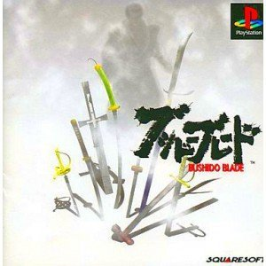

ブシドーブレード
日本刀をはじめ種々の武器を用いる対戦型格闘ゲームだが、このゲームはそれまでの対戦型格闘ゲームと異なり、いわゆる「体力ゲージ」というものが存在しない。通常のゲームは開始時に与えられたゲージを使い切ることでダウンするが、このゲームは頭、腹、胸という3箇所に存在する急所に、ある一定の深さで一回でもダメージが与えられると即座に終了（絶命）する。
また、通常のゲームではゲージを完全に使い切るまでは例え大きなダメージを与えられていても、無傷の時と同じ状態でその行動に制約がつくことはないが、本作では各身体の部位に傷を負うとその行動に制約が生じる。例えば足に怪我をすると走る速度が遅くなったり歩けなくなったりという具合である。
ステージによって色々特徴があり、強風で軽量キャラクターが押し流されたり、大きな段差があって転落死したり（弐のみ）、洞窟や竹林などの狭い場所では長得物が不利だったりと多彩。また、雪や砂、土の地面だと目潰し攻撃が可能など、地形が戦略に与える影響は大きい。
ストーリーモードにて、ゲーム開始直後に相手が口上を述べている最中や背後から、又は段差を上っている最中などに相手を斬殺すると武士道に反するとしてゲームオーバー（コンティニュー不可）となる（壱のみ）。
ストーリーモードの他にも打刀で百人斬りを目指すモードや、横からの眺めでなく、キャラクターの視点でゲームをプレイできるモードもある（弐では全モードでキャラクター視点でのプレイが可能）。TVとPS、ソフトをそれぞれ2つずつ用意することで通信対戦をすることも可能。画面をモノクロにする機能もある。
「"ブシドーブレード"」
『フリー百科事典 ウィキペディア日本語版』より。
URL: http://ja.wikipedia.org/wiki/ブシドーブレード